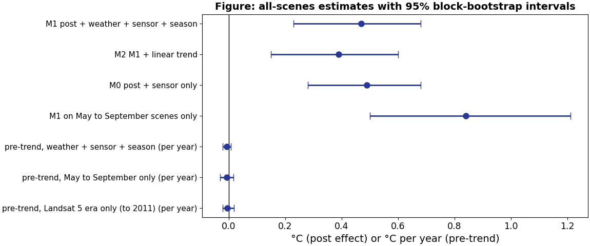

From farmland to urban heat: how robust is the link?
Farmland-to-built-up conversion and land surface temperature in Gia Lam and across Hanoi, 1999 to 2025
Truong Tuan Nghia (2540017) Nguyen Minh Anh (2540032) Hoang Ha Dang (2540028)
USTH, Space Applications and Services, group project 26 October 2026
1 Introduction. What? One question, three hypotheses
H1 Mapping
Part of the farmland became built-up land after 2018, and the change can be mapped.
H2 Heat
Converted land warms more than comparable farmland that stayed farmland.
H3 Nature nearby
Converted land closer to vegetation or water is cooler.
We claim an association, not a proven cause. LST is the temperature of the surface, not of the air.
1 Introduction. Why? Two-date comparisons hide their own assumptions
What exists
Hanoi studies link built-up land to LST from two dates. Local work documents urbanisation around Gia Lam.
What is missing
Nobody tests the three assumptions: the map is right, the control follows the same path, two clear scenes are comparable.
Why it is hard here
Monsoon cloud leaves few clear hot-season scenes, and the two land-cover products disagree.
2 Methods. Where and when? East Hanoi, 1999 to 2025

Where
Gia Lam, eastern Hanoi. About the union of four 2025 communes (117.7 km2). The district level was abolished on 1 July 2025.
When
Temperature 1999 to 2025 (635 Landsat scenes read). Land cover 2017 to 2025. Conversion window from 2018.
2 Methods. How? Land-cover maps first, temperature last
2018 to 2025
trained where Esri and WorldCover agree
Esri, own, consensus
635 Landsat scenes + ERA5
No circularity
Temperature never shapes the maps: land cover enters first, LST only in the last step.
Stability probe
Pixels that must not change class are tracked every year to measure classifier drift.
Weather control
ERA5 air temperature, soil moisture, radiation, rain and dew point at the overpass.
2 Methods. How? The scene-gap regression replaces the two-date difference
converted minus control
and pre-trend 1999 to 2017
400 times
gt = α + δ postt + Σ βj Wj,t + γsensor + θ seasont + εt
Why a gap
Both groups sit in the same scene, so the weather of the day acts on both.
Why blocks
Pixels in a 600 m block are alike (ICC 0.80): 14,581 pixels carry about 380 independent observations.
Placebos
Fake break dates and a one-sensor model test whether the effect is real.
3 Results. Eight clear scenes are not enough


3 Results. H2: with all 383 usable scenes, the gap starts after 2018

3 Results. H2: +0.5 °C, no pre-trend, placebos pass

| Specification | Effect (°C) |
|---|---|
| Weather, sensor, season | +0.47 (0.23 to 0.68) |
| May to September only | +0.84 (0.50 to 1.21) |
| Landsat 7 only | +0.26 (0.02 to 0.47) |
| Fake break 2008 | -0.05 (-0.15 to 0.08) |
| Fake break 2013 | -0.02 (-0.15 to 0.11) |
| Pre-trend per year | -0.007 (-0.021 to 0.008) |
3 Results. H1: two land-cover maps agree on only 207 ha


3 Results. H3 and all of Hanoi

H3
Trees: +0.27 °C per log unit of distance (0.16 to 0.38), supports H3. River and ponds: opposite sign.
Hanoi
7,984 ha converted. Pooled +0.68 °C (0.36 to 0.95); 13 of 16 districts positive, from -0.73 to +3.40.
Caution
The dose-response placebo (+1.59) is as large as the real slope (+1.82).
4 Discussion. A smaller and more credible answer
What changed
Eight scenes gave 1.4 to 1.6 °C, but placebos showed the gap pre-existed. Averaging over 383 scenes gives about 0.3 to 0.8 °C.
What is solid
No trend in 18 years before 2018; fake breaks give zero; one instrument still positive; sign robust in Hanoi.
What is not
Conversion maps unvalidated; post dummy marks a period, not each conversion date; Level-2 untested on the ground.
5 Conclusions and perspectives
Conclusions
Conversion goes with about +0.5 °C (0.23 to 0.68) after 2018, +0.84 °C in the hot season, after 18 years without pre-trend. Trees help, water does not.
Perspectives
1. Label 200 points blind.
2. Dynamic World 2018 and 2025 in Earth Engine.
3. Older land-cover maps for the Landsat 5 era.
4. Hanoi dose-response with the all-scenes design.
Tool disclosure: an AI assistant helped with code, figures and text; to be confirmed with the lecturers. Contributions: Minh Anh (study-area checks, GEE1), Dang (Landsat), Nghia (Sentinel-2, GEE2); to be confirmed.